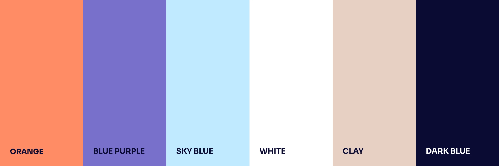
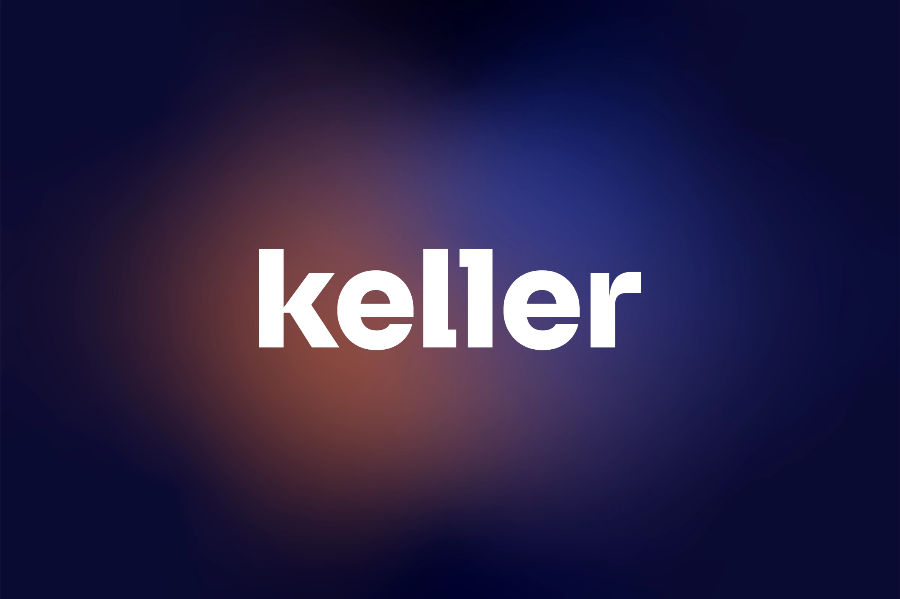
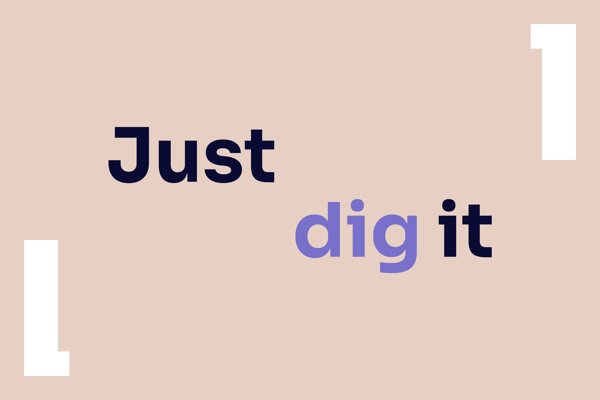
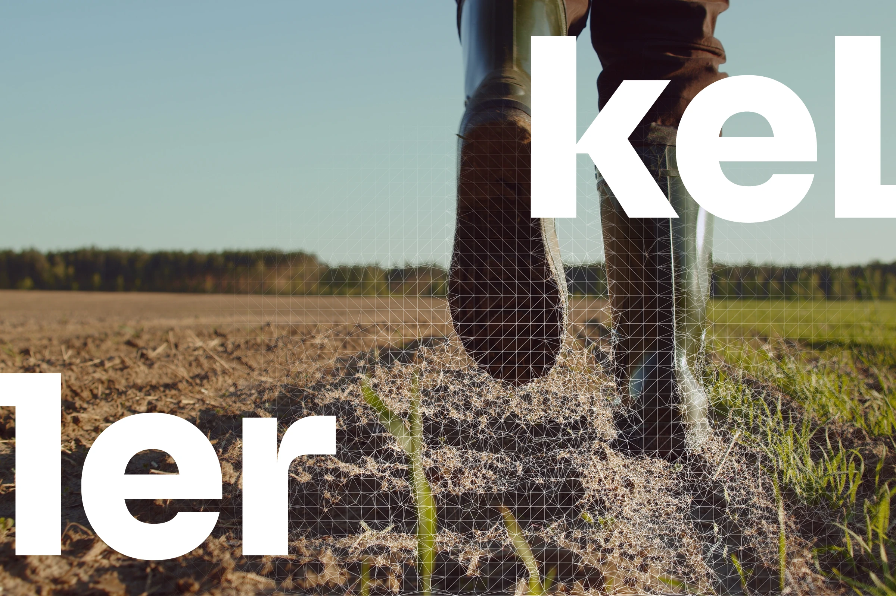
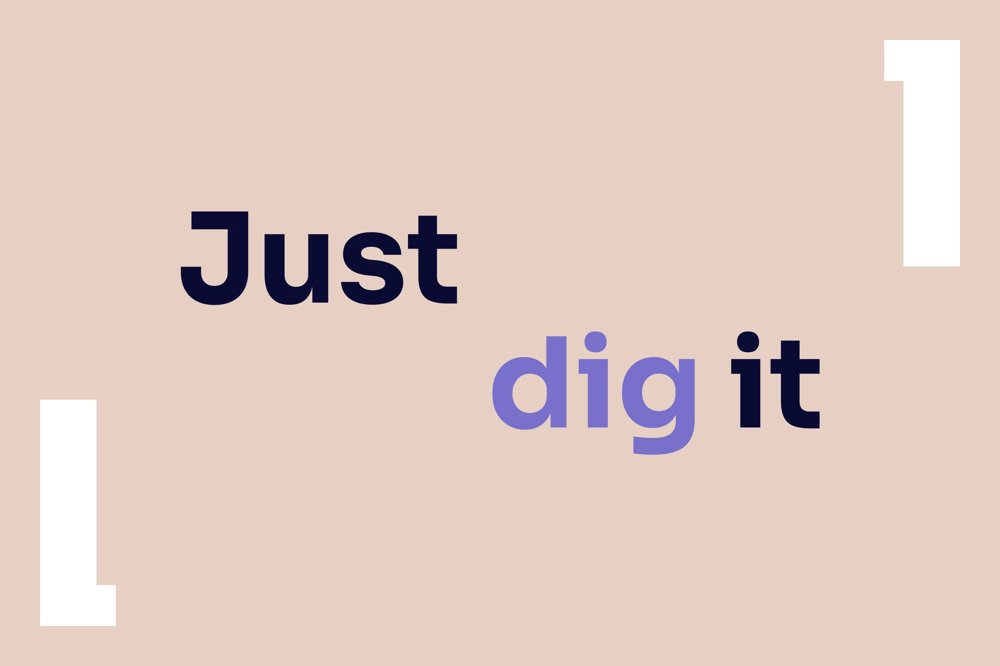
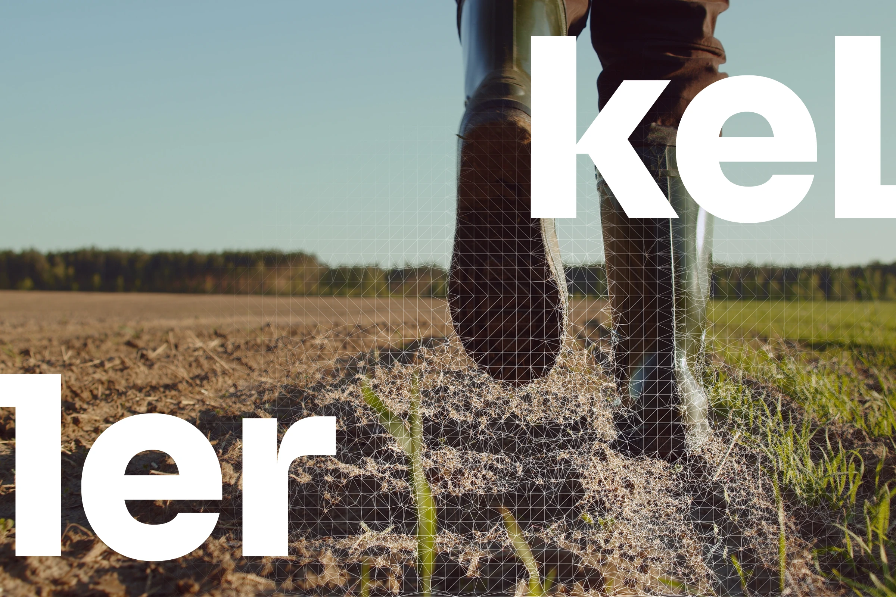
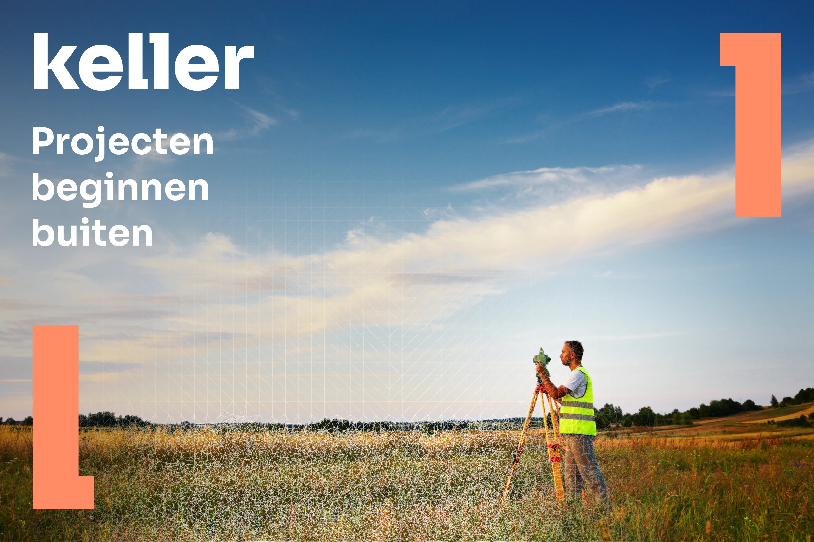
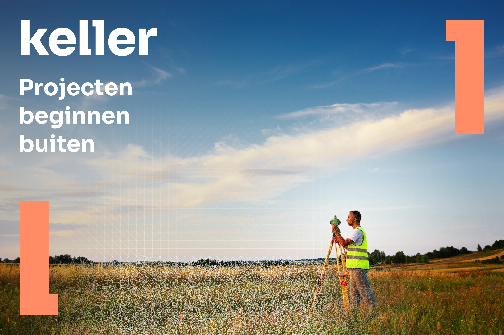

Gearfreak
Branding

What
Brand identity
Where
WADM
Role
Designer
WADM helped keller infra level up from a traditional civil engineering brand to a bold challenger with a clear story. together we sharpened their positioning from execution to innovation and gave them the confidence to own a new space in the market. just dig it became more than a line; it’s their mindset.
Design
The new identity hits hard: raw, industrial energy meets clean design. we built a system that feels technical but never stiff — bold typography, sharp color contrasts and visual motion that mirrors their fieldwork. everything connects back to doing things differently, smarter and with purpose.
Result
Branding wasn’t just a facelift — it’s a full-on culture shift. every touchpoint, from pitch decks to helmets, reflects the same attitude and ambition. that’s the power of thinking in systems, not silos: a story that runs through every layer of the brand, from ground to skyline.


 



 



More posts